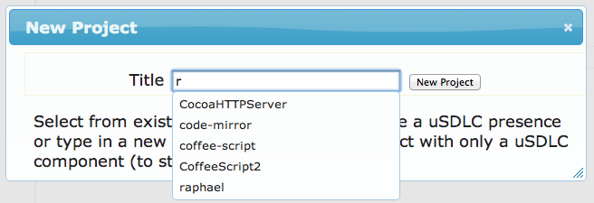

Bruce looks at the uSDLC screen and sees that the only project on the left is uSDLC. He knows he as other projects in ~/dev, but he can't see them. He decides to add one at ~/dev/raphael. From the uSDLC menu he selects Project | New. Bruce types r for raphael and a list of matching projects that are not attached to uSDLC are displayed.

He selects raphael and the project tree adjusts to display the new project.
Time for the new. Bruce opens Project | New again and types iBundy. Now he has iBundy in the list also. Drilling in shows that a rudimentary structure already in place. Because Bruce knows what he wants he can go directly to design and ignore the rest.
Bruce wonders if he can change the structure of a new project so it doesn't include sections he doesn't need. Under uSDLC | Environment | Configuration | Templates | Projects | Default is a layout identical to the new iBundy one. Changing this template will change how a new project looks.